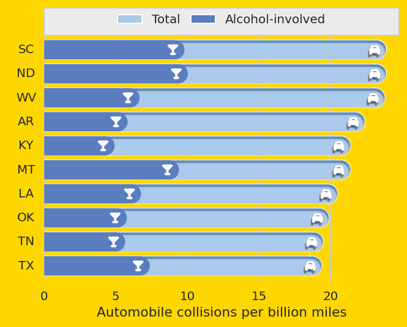

Code
import numpy as np
import seaborn as sns
import matplotlib.pyplot as plt
sns.set_theme(style="whitegrid")
# Load the example car crash dataset
crashes = sns.load_dataset("car_crashes").sort_values("total", ascending=False).iloc[:10]
# Initialize the matplotlib figure
fig, ax = plt.subplots(num=1, clear=True, figsize=(5, 4), layout="constrained")
# fig, ax = plt.subplots(num=1, clear=True, layout="constrained")
# Plot the total crashes
sns.set_color_codes("pastel")
sns.barplot(x="total", y="abbrev", data=crashes,
label="Total", color="b")
# Plot the crashes where alcohol was involved
sns.set_color_codes("muted")
sns.barplot(x="alcohol", y="abbrev", data=crashes,
label="Alcohol-involved", color="b")
# Add a legend and informative axis label
ax.legend(ncol=2, loc="lower right", frameon=True,
bbox_to_anchor=[1, 1])
ax.set(xlim=(0, 24.8),
ylim=(9.6, -0.6),
ylabel="",
xlabel="Automobile collisions per billion miles")
sns.despine(left=True, bottom=True)
import mpl_visual_context.patheffects as pe
from mpl_pe_fancy_bar import BarToRoundBar
from mpl_visual_context.patheffects_shadow import ShadowPath
round_bar = BarToRoundBar(orientation="horizontal", dh=0.5)
shadow = ShadowPath(115, 3)
from svgpath2mpl import parse_path
# car icon from https://fontawesome.com/icons/car?f=classic&s=solid
# 512 x 512
s_car = "M135.2 117.4L109.1 192H402.9l-26.1-74.6C372.3 104.6 360.2 96 346.6 96H165.4c-13.6 0-25.7 8.6-30.2 21.4zM39.6 196.8L74.8 96.3C88.3 57.8 124.6 32 165.4 32H346.6c40.8 0 77.1 25.8 90.6 64.3l35.2 100.5c23.2 9.6 39.6 32.5 39.6 59.2V400v48c0 17.7-14.3 32-32 32H448c-17.7 0-32-14.3-32-32V400H96v48c0 17.7-14.3 32-32 32H32c-17.7 0-32-14.3-32-32V400 256c0-26.7 16.4-49.6 39.6-59.2zM128 288a32 32 0 1 0 -64 0 32 32 0 1 0 64 0zm288 32a32 32 0 1 0 0-64 32 32 0 1 0 0 64z"
s_wine = "M32 0C19.1 0 7.4 7.8 2.4 19.8s-2.2 25.7 6.9 34.9L224 269.3 224 448l-64 0c-17.7 0-32 14.3-32 32s14.3 32 32 32l96 0 96 0c17.7 0 32-14.3 32-32s-14.3-32-32-32l-64 0 0-178.7L502.6 54.6c9.2-9.2 11.9-22.9 6.9-34.9S492.9 0 480 0L32 0zM173.3 128l-64-64 293.5 0-64 64-165.5 0z"
icon_car = parse_path(s_car)
icon_wine = parse_path(s_wine)
from mpl_pe_fancy_bar.bar_with_icon import Icon, BarWithIcon
with_icon_car = BarWithIcon(Icon((512, 512), icon_car), orientation="horizontal", scale=0.5, dh=0.6)
with_icon_wine = BarWithIcon(Icon((512, 512), icon_wine), orientation="horizontal", scale=0.5, dh=0.6)
pe1 = [
round_bar,
round_bar | pe.ClipPathSelf() | shadow | pe.HLSModify(l="70%"),
with_icon_car | shadow | pe.HLSModify(l="50%"),
with_icon_car | pe.FillColor("w")
]
for p in ax.containers[0]:
p.set_path_effects(pe1)
pe2 = [
round_bar | pe.FillOnly(),
with_icon_wine | pe.FillColor("w")
]
for p in ax.containers[1]:
p.set_path_effects(pe2)
from mpl_visual_context.axes_panel import InsetDivider, add_panel
from mpl_visual_context.legend_helper import (
extract_offset_boxes_from_legend,
)
from matplotlib.offsetbox import HPacker
from matplotlib.offsetbox import AnchoredOffsetbox
divider = InsetDivider(ax)
panel = add_panel(divider, "left", "ticklabels", pad=0.0)
legend_panel = add_panel(divider, "top", "empty", pad=0.0)
leg_title, oblist = extract_offset_boxes_from_legend(ax.legend_)
pack = HPacker(pad=0.0, sep=10, children=oblist)
box = AnchoredOffsetbox("upper center", child=pack, pad=0, frameon=False)
ax.legend_.remove()
legend_panel.add_artist(box)
legend_panel.add_to_extent_list(box)
legend_panel.grid(False)
panel.set_axis_off()
fc = "gold"
fig.patch.set_fc(fc)
ax.patch.set_visible(False) # fc(fc)
